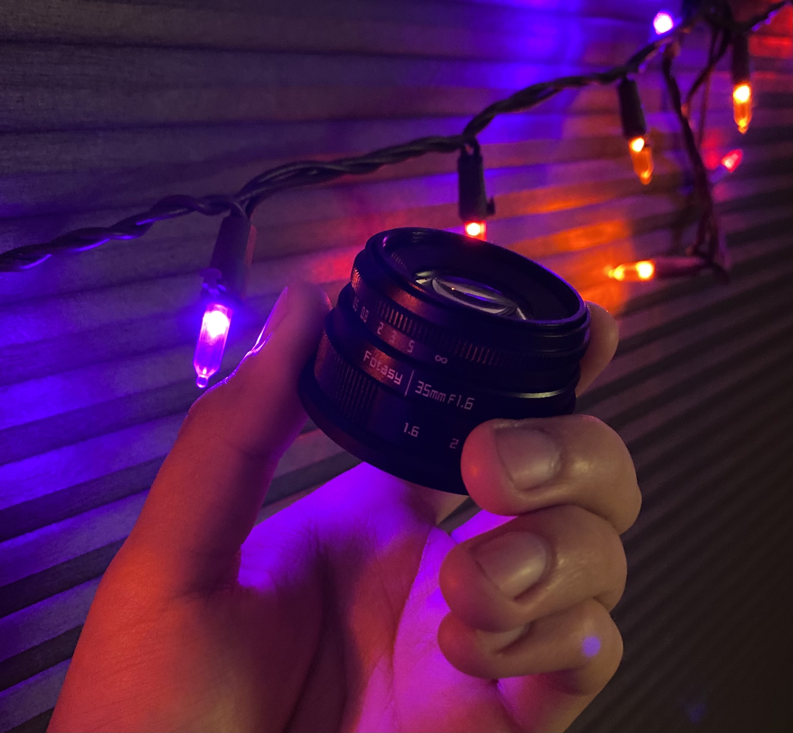
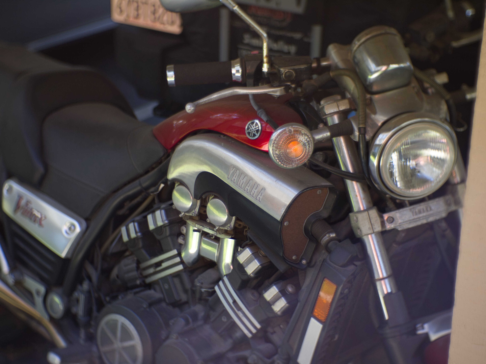
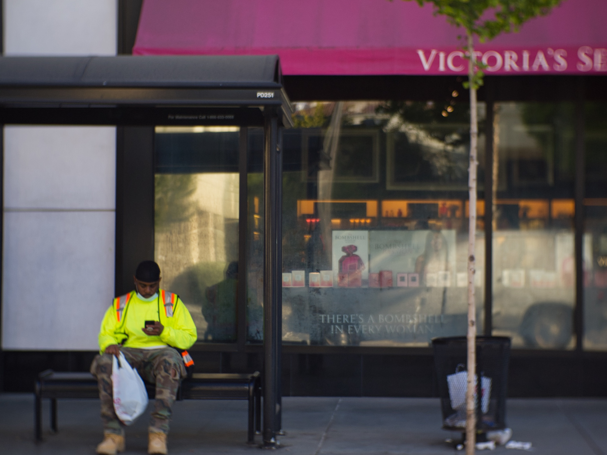

Darkroom Diary: Using a $35 Lens on a 10 Year Old Camera
Photography is an expensive hobby. It’s one I love but definitely will suck as much money as you put into it. So when I see a lens that costs $35 on Amazon, I know I need to get it immediately.
 Taken with iPhone 11
Fotasy 35mm f/1.6 Micro 4/3 Lens⌗
The lens I picked up is the Fotasy 35mm f/1.6 lens. It’s Micro 4/3 lens so it’s a 70mm equivalent. That’s a bit tight for pure street photography but I should be able to make it work. And it should be great for portraits. “Should”. More on that in a bit.
The lens itself feels solid. It is made of metal, which I definitely didn’t expect for a lens that cost $35. The lens felt pretty damn sharp on my camera’s screen, but when I reviewed the images I got a different story. It’s definitely a lot sharper than you’d expect out of a $35 lens. It’s not a Holga, but it is a far cry from more expensive lenses. I was expecting something like a toy camera lens but this is almost useable.
 This lens does have some killer Bokeh
This lens does have some killer Bokeh
The interesting thing about the lens is that the aperture is stepless. There’s no clicks at any f-stop,m. There’s definitely a freedom to this. If I want to open the aperture slightly more than f/8 without going all the way to f/5.6, I easily can. It makes you think a lot more about your shots. I believe this kind of aperture is more common on video lenses. However, the softness of the lens doesn’t seem to lend itself to video.
There are trade-offs of course. The lens is fully manual. There’s no electronics in it whatsoever. There is no autofocus. If you’re trying to shoot sports, animals, or children this is not the lens for you. But if you’re able to take a second to frame and focus your shot this lens might be what you’re looking for.
 It took me a while to get used to a 70mm equivalent lens. Can you tell I normally shoot wide?
However, it is still a $35 lens. Mine came with what could be a design choice or a defect. Most likely defect. The focus ring turns about an 1/8 of a turn past infinity. So if you’re shooting from the hip that might lead to lost shots. I cannot trust this lens to zone focus. I don’t know if this is an issue with my lens specifically or with this lens in general but it is something to talk about. There’s also slight resistance and grating in the focus ring around infinity. Not major, but something you feel.
Image Quality and Experience⌗
I ended up rewriting this whole section once I viewed my images on my computer. On my cameras tiny screen, the pictures looked sharp and in focus and I thought I was getting great shots.
The image quality on this lens is not great. It has a very soft feel, even when focused at f/16. The image quality reminds me of a mediocre film point and shoot. And that I might not be a bad thing if that’s what you’re looking for. The lens has some pretty bad vignetting, and in some images it actually ruins the shot. I could see taking shots with this, running it through some VSCO filters and getting a really nice film feel. But this should not be your main lens.
 I focused to infinity for this shot. But since the lens is defective and goes past infinity, the shot was missed. This isn’t the only shot I missed, and I’m not proud of it, but something anyone considering this lens should think about.
What I did like about this lens is how tiny it is. Like, it’s small. It’s not quite a pancake lens but it’s almost there. It’s about 3/4 the size of the kit lens when the kit lens is closed, and less than 1/2 the size of the fully extended kit lens. And for me, that’s a completely new experience. The majority of my experience with cameras comes from a Nikon d3300 and its lenses. And I can’t help but think of the tele on that and comparing it to this tiny thing.
As for the focal length, I am shooting on Micro 4/3, which means this 35mm lens acts more like a 70mm. This is a change for me because I normally like shooting a lot wider. My last post was literally gushing over the iPhone 11’s 13mm equivalent lens. So it was a full 180 for me. But it gives me another perspective.
 Probably my favorite shot with this lens. However, this lens is too soft to take real portraits with.
Probably my favorite shot with this lens. However, this lens is too soft to take real portraits with.
The lens ends up acting a bit like a portrait lens on my camera. And that kind of makes the softness of the lens hurt a bit more. 70mm is such a good portrait lens and the way subjects look is honestly incredible, but I won’t really be able to use it for that if my subjects won’t come out sharp.
Using a 10 Year Old Mirrorless⌗
So this has been the most surprising part of the whole experience to be quite honest. I’m using an Olympus PEN E-PL1. This is a camera that came out 10 years ago in 2010. In the world of digital, to use even a year old camera isn’t seen well, let alone a camera from the previous decade.
But it’s been great. The camera accepted the lens immediately and I was able to shoot right after mounting it. This was actually a big concern for me since I saw so many reviews about needing to dig through settings to allow cameras to accept a fully manual lens. But no, it worked right away.
 My camera metered the light perfectly every time. I just wish this lens didn’t suck. You don’t see sharpness at any point of this shot.
My camera metered the light perfectly every time. I just wish this lens didn’t suck. You don’t see sharpness at any point of this shot.
Of course autofocus and camera controlled aperture don’t work. It is a manual lens. But with the camera on P, it does a pretty phenomenal job of metering the light and choosing the right ISO and shutter speed for the shot. In terms of light metering, I haven’t had a miss.
There are definitely features I wish I had. The E-PL1 has no focus peaking. So focus has to either be intuition or zooming in with the screen on the back. And I’ve definitely missed shots like that. But that’s part of the fun of a manual lens. If I wanted shots to be perfectly focused every time I’d just use my kit lens at f16.
And of course a 12MP 10 year old sensor isn’t exactly cutting edge right now. The ISO is useable only down to about 800. ISO 1600 is pushing it and ISO 3200 is a noisy mess. This is especially challenging to work with on a lens that’s already pretty soft.
Conclusion⌗
I hadn’t been able to put this lens down. And I think that’s the most important thing. Since I got this lens it’s just lived on my camera. It’s fun, it’s interesting, it’s kinda odd and unique and finicky and sometimes bad. Often bad. It’s imperfect. In my first draft of this article I praised that imperfection. After seeing my shots I think that praise was a bit early.
 I had to include a picture of dog.
I had to include a picture of dog.
But I wanted a lens that helped me shoot more. I could have saved for months and spent $1000 on a wonderful prime. But $35 and two days of shipping and I’m shooting now.
But, buy a $35 lens, expect $35 lens quality.